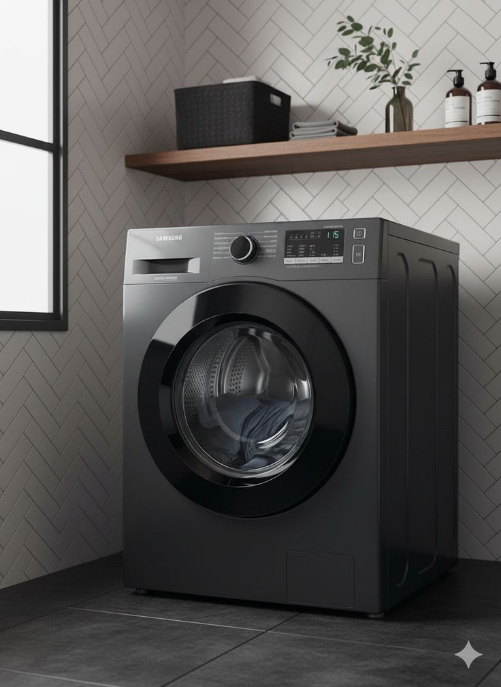

صيانة الغسالات الأوتوماتيك
غسيل بلا توقف… نصلح غسالتك ونعيدها للعمل بكفاءة

الغسالة جهاز يُستخدم بشكل شبه يومي، وتعطلها يعطّل بيتك كله. يقدّم فنيو خدماتي صيانة وإصلاح الغسالات الأوتوماتيك بمختلف أنواعها، من عدم الدوران والتصريف إلى التسريب والصوت العالي وأعطال لوحة التحكم، مع توضيح العطل والتكلفة قبل البدء.
خدمات الغسالات
اختر المشكلة التي تواجهها لتقرأ التفاصيل.
الغسالة لا تدور
الدرام لا يدور أو لا يعصر؟ نفحص السير والموتور والفحمات ونعالج السبب.
التفاصيلعدم تصريف المياه
مياه متبقية بعد الدورة؟ ننظّف الفلتر ونفحص طلمبة التصريف والخرطوم.
التفاصيلتسريب المياه
مياه تحت الغسالة أو من الباب؟ نحدد المصدر ونصلح الجوان والخراطيم.
التفاصيلالصوت العالي والاهتزاز
صوت طحن أو اهتزاز أثناء العصر؟ نفحص الرولمان والمساعدين ونعالج السبب.
التفاصيللا تسحب مياه أو لا تسخن
لا تمتلئ بالمياه أو تغسل بمياه باردة؟ نفحص الصمام والسخان والحساسات.
التفاصيللا تعمل / لوحة التحكم
لا استجابة أو أضواء تومض أو الباب مغلق؟ نتتبع العطل في القفل واللوحة.
التفاصيلصيانة دورية وتنظيف
تنظيف شامل وفحص للجوان والفلاتر والخراطيم لإطالة عمر غسالتك.
التفاصيلهل تلاحظ شيئًا من هذا؟
- الغسالة لا تدور أو يتوقف الدرام أثناء الغسيل
- مياه متبقية في الغسالة بعد انتهاء الدورة
- تسرب مياه من أسفل الغسالة أو من الباب
- صوت عالٍ أو اهتزاز شديد أثناء العصر
- الغسالة لا تعمل أو الأضواء تومض
- الباب لا يُفتح بعد انتهاء الدورة
كيف تحافظ على الغسالات
عادات بسيطة تطيل عمر جهازك وتقلل الأعطال.
لا تتجاوز الحمولة المحددة
الحمل الزائد يجهد الرولمان والمساعدين ويسبب اهتزازًا.
افحص جيوب الملابس
العملات والمشابك تسد الفلتر وتتلف الطلمبة.
اترك الباب مفتوحًا بعد الغسيل
يجف الجوان والدرام فلا تتكوّن الروائح والعفن.
نظّف فلتر الطلمبة ودرج المنظف
كل شهر أو شهرين حسب الاستخدام.
اضبط أرجل الغسالة
الاستقرار على أرض مستوية يقلل الاهتزاز والضوضاء.
اتصل بالفني فورًا إذا لاحظت:
- الغسالة تهتز بشدة أو يصدر عنها طحن
- مياه تتسرب من أسفلها
- الباب لا يُفتح بعد الدورة
- رائحة احتراق أو رمز خطأ متكرر
ماركات الغسالات التي نتعامل معها
- إل جي
- سامسونج
- بوش
- سيمنز
- بيكو
- توشيبا
- شارب
- هيتاشي
- فريش
- يونيفرسال
- يونيون إير
- زانوسي
- إلكترولوكس
- ويرلبول
- كاندي
- هوفر
أسماء الماركات ملك لأصحابها، وذكرها هنا للدلالة على أنواع الأجهزة التي نتعامل معها ولا يعني أننا وكلاء معتمدون لها.
أسئلة حول الغسالات
هل أستمر في استخدام الغسالة إذا كانت تهتز بشدة؟
ننصح بإيقافها وتخفيف الحمولة وضبط اتزانها، فإن استمر الاهتزاز فاتصل بنا لأن استمرار التشغيل قد يتلف الرولمان والمساعدين.
هل تصلحون الغسالات الأتوماتيك فقط؟
نتعامل مع الغسالات الأوتوماتيك بمختلف أنواعها، وعند الاتصال أخبرنا بنوع غسالتك وموديلها لنتجهّز بالقطع المناسبة.
ما المعلومات التي أحتاجها عند الاتصال؟
اذكر الماركة والموديل إن أمكن، ووصف العطل، وأي رمز خطأ يظهر على الشاشة، وعنوانك.
عندك عطل في جهازك؟ كلّمنا الآن
فنيونا جاهزون لتحديد موعد زيارة يناسبك. نستقبل اتصالاتك على مدار الساعة.